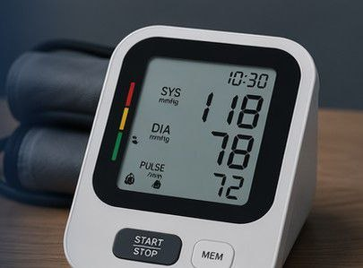
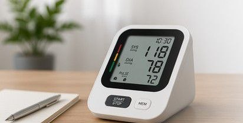

جهاز قياس ضغط الدم المطور
تقنية حديثة تمنحك قراءات دقيقة، تجربة مريحة، ومتابعة ذكية لضغط دمك في أي وقت.

جهاز قياس ضغط الدم المطور هو جهاز إلكتروني ذكي صمم لقياس ضغط الدم ومعدل نبضات القلب بدقة عالية، مع تحسين تجربة المستخدم من خلال شاشة واضحة وتقنيات متقدمة وإمكانيات ذكية للمراقبة والتخزين.
تصميم مريح وسهل الاستخدام للفئات
حفظ القراءات وتتبع التغيرات مع الوقت
عرض رقمي كبير وسهل القراءة
تقنية متطورة لضمان قراءات دقيقة وموثوقة

يرتدي المستخدم الكفة بشكل صحيح حول الذراع
يتم الضغط على زر البداية لبدء عملية القياس
يقوم الجهاز بتحليل نبضات الدم وحساب الضغط ومعدل النبض
تعرض القراءة على الشاشة وتحفظ في ذاكرة الجهاز للمتابعة